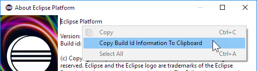
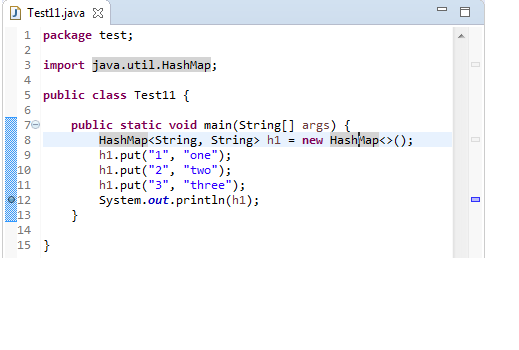

Here are some of the more noteworthy things available in the Oxygen milestone build M1
which is now available for download.
We also recommend to read the Tips and Tricks, either via Help > Tips and Tricks... or online for
Platform,
JDT, and
PDE.
| Platform |
| Dropped support for Unix platforms |
Eclipse has dropped support for the following Unix based platforms: AIX, Solaris, HP-UX and s390.
For these platforms, no builds are available on the eclipse.org downloads page.
For more information, please read the announcement made by the Eclipse PMC in July.
|
| "Always run in background" enabled by default |
The Always run in background preference is now enabled by default.
If you prefer to see a progress dialog for long-running operations, you
can disable this option on the General preference page.
|
| Improved default styling for the toolbar |
The styling of the window toolbar has been improved.
On Windows, the toolbar color is now consistent with the color of the perspective switcher.

On Linux and Mac, the separator line was removed, which gives you a few more pixels on Linux
and removes a yellow line on the Mac.

|
| New default styling for form-based user interfaces |
The default styling for form-based user interfaces was changed to use a flat, gray style.
This change was inspired by the popular "Clean Sheet" plug-in.
Below you see screenshots of the MANIFEST.MF editor and the Git Staging view in this new design.


|
| Images are opened in the Eclipse IDE |
Image files are now opened directly in Eclipse by default.
The Internal Web Browser has been registered as default editor for files with the png, jpg, jpeg, gif, bmp, and ico extensions.

Use Open With > System Editor to open files in the default external program.
|
| "Copy Build Id Information" in About dialog |
In the About dialog, you can use the context menu to copy
information about your Eclipse installation.

The Copy Build Id Information to Clipboard command copies
the product name, version, build id, OS, windowing system, and additional
OS-specific infos like the GTK or WebKit versions.
The command can also be invoked via Quick Access Quick Access (Ctrl+3).
|
| Maximize and Minimize via Window > Appearance menu |
The Maximize and Minimize Active View or Editor menu items have been moved to
the Window > Appearance menu. They used to be in the Window > Navigate menu.
|
| "Terminate and Relaunch" from Run menu, context menu and tool bar |
A Terminate and Relaunch option is now available while launching from Run menu, context menu and tool bar.
The default setting is to launch without terminating previous launches. To enable automatic termination,
select the option Terminate and Relaunch while launching on
Preferences > Run/Debug > Launching.
The behavior not selected on the preference page can also be activated on-demand by holding
the Shift key while launching the configuration from history.

|
| Breakpoints in Overview Ruler |
Breakpoints are now visible in the Overview Ruler by default.

To configure the rendering of annotations, right-click the overview ruler and choose Preferences....
This directly opens the preference page General > Editors > Text Editors > Annotations.
|
| JDT |
| Show JUnit failure trace in Console view |
A new button has been added to the JUnit Failure Trace header to show the stack trace of a failed JUnit test in the Console view.
The Console view makes it convenient to view a long and wide stack trace, copy parts of the stack trace and navigate to the classes on the stack trace using hyperlinks.

|
| Skip button in Organize Imports dialog |
While using the Organize Imports dialog to import multiple unresolved types, you can now skip a type without cancelling the whole operation by using the new Skip button.
No import statement is added for the skipped type.

|
| Type name with extension in New Java Type creation wizards |
New Java Type creation wizards now accept the .java extension with the type name instead of showing the error message: "Type name must not be qualified".
For example, to create a new class com.test.C1<T>.java, you can directly paste this qualified type name with extension in the Name field of the New Java Class wizard.

|
| PDE |
| New Layout Spy tool |
PDE has added a new tool for debugging SWT layouts. To activate it, use the
shortcut Ctrl+Alt+Shift+F9 from any window.
Usage:
- Click Select Control then click the control you want to inspect
- Enable Show Overlay and navigate the widget hierarchy until you find a
control whose boundary is correct (the red rectangle) and whose child's boundary
is incorrect (the yellow rectangle).
- Look at the results of computeSize. If the result of computeSize is correct,
the problem is in the parent layout or its attributes. Otherwise the problem
is in the child widget.

|
| Changed Execution Environments creates a version problem |
Changing the Execution Environments in a plug-in now creates a problem marker indicating that the minor version should be increased. This happens
if the minor version is not already increased with respect to the baseline. The preference to control the severity of this problem is located in
the Version Management tab of the Plug-in Development > API Errors/Warnings preference page.

|
| Platform Developers |
| Declarative services implementation replaceable |
In platform bundles, the bundle dependencies to org.eclipse.osgi.services have been replaced with the necessary package imports.
Mostly org.osgi.service.event needed to be added to the imported packages. This was necessary to avoid a
uses constraint violation when replacing org.eclipse.equinox.ds with org.apache.felix.scr.
|
| SWT requires 1.8 Java runtime |
The SWT projects are now compiled at 1.8 compliance level. As a result, a Java runtime of 1.8 or above is required to run SWT applications.
|
| Equinox |
| Several plug-ins define Provided Capabilities metadata |
You can now rely on OSGi's Require-Capability meta data in your Eclipse-based application for
org.eclipse.equinox.event and org.eclipse.equinox.cm as they now provide
the corresponding osgi.service capability.
Additionally, p2 capabilities are specified to be able to configure non-code dependencies that can be interpreted
by the p2 resolver.
|
|